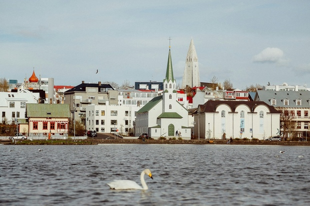

The Nordic
Combinatorial Conferences are held every third year – the venue and
organisation rotating among the Nordic countries. At NORCOM,
mathematicians from the Nordic countries as well as from other countries
meet and interact in an informal, relaxed atmosphere. All fields of
mathematics related to combinatorics and discrete mathematics are
welcome.

This year the conference is held in Iceland, with lectures taking place at Reykjavik University.
To register, start by filling out the first form linked below. During this process, you can specify if you intend to present a talk. In this case, you will be asked for a title and an abstract of your talk.
Next, you need to complete the payment form. The registration fee is 300 EUR; it includes lunch on all three days and dinner on Tuesday evening. You may delay this step until you are informed about the acceptance of your talk.
Please ensure you submit both the registration and payment forms to confirm your participation:
The deadline for registering is
Speakers will be notified on 20 March whether their talk has been accepted.
The conference venue can accommodate 120 participants and we will have to close the registration sooner than the deadlines given above if this cap is reached.
The conference runs from Monday morning 16 June to Wednesday afternoon 18 June. Thus, we recommend that participants arrive on Sunday 15 June.
On June 18 we will be honoring Einar Steingrímsson on his 70th birthday (Einar fest).
A detailed timetable will be provided later.
Keflavík Airport is Iceland’s main hub for international travel.